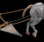

RM Brawl 1.6 Patch Notes
Market upgrades have been reworked.
Change-logs have been updated to match patch 1.6
Check this to see what all has changed since AOE Rise of Rome 1.0a
Check this to see what all has changed since UPatch 1.1 R4
Technology changes
Cheaper Market, but much longer research times makes it more preferable to build multiple Markets.
 Market
Market
Wood cost 150 -> 120
 Farmer
Farmer
Work rate 0.45 -> 0.4725
 Farm
Farm
Wood cost 75 -> 60
Food capacity 250 -> 175
Build time 24s -> 30s
 Domestication
Domestication
Food cost 200 -> 140
Research time 40s -> 80s
Plow
Food cost 250 -> 200
Food in Farms +100 -> +75
Research time 75s -> 100s
Irrigation
Food in Farms +125 -> +150
Research time 100s -> 120s
 Woodworking
Woodworking
Research time 60s -> 80s
 Artisanship
Artisanship
Research time 80s -> 100s
 Craftsmanship
Craftsmanship
Research time 100s -> 120s
Gold Mining
Research time 50s -> 80s
 Coinage
Coinage
Research time 60s -> 30s X5
Gold cost 100 -> 20 X5
Food cost 200 -> 40 X5
Stone Mining
Research time 30s -> 80s
 Siegecraft
Siegecraft
Research time 60s -> 90s
 Pottery (New technology)
Pottery (New technology)
Requires Bronze Age
Food cost 150
Wood cost 60
Research time 90s
Research location Market
Effect Resource buildings (Granary, Storage Pit) cost 50% less, Foragers work 20% faster.
Akinaka
Bonus Hit Points +10 -> +20
 Jihad
Jihad
Bonus Melee Damage +3 -> +4
 Martyrdom
Martyrdom
Research time 100s -> 150s
Civilizations
Getting the civilizations to be in line with the new easier way to get into Iron Age.
Rework to Palmyra so that its power isn't entangled to maximum population.
Assyrian
Technologies disabled Afterlife, Irrigation
Babylonian
Technology disabled Irrigation
Palmyra
Bonus removed Villagers take ½ population
Bonus removed Villagers have +3 carry capacity
New bonus Starts game with +4 headroom
New bonus Town Centers work 10% faster
Technologies disabled Axeman, Chariot Archer, Iron Shield, Armored Elephant, Catapult, Heavy Catapult, Ballista, Jihad
Technologies enabled Plow, Chain Mail, Heavy Horse Archer, Engineering
Persian
Bonus removed Hunters work 20% faster
Bonus Elephants move 40% faster -> 30% faster
Bonus Hunted animals grant 60% more food -> 75% more food
Technologies enabled Artisanship, Akinaka
Roman
Technology disabled Jihad
Shang
Technology disabled Irrigation
Yamato
Technologies disabled Architecture, Composite Bow
Technology enabled Broad Sword
Bug fixes
Looking through all civilizations.
Improving Writings code.
 Writing
Writing
Now also activates when house is being built.
Palmyra
Architecture wasn’t disabled.
Macedonian
Siege units didn’t get the movement speed bonus.